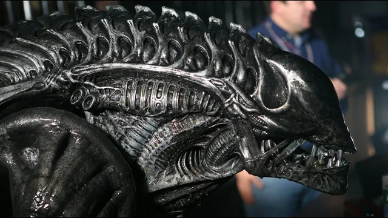

Xenomorph Warrior

The second most common Xenomorph is the Xenomorph Warrior.
These guys serve the Xenomorph Queen as her soldiers. They are better in pratically every way than a Drone.
Sadly, there are no named Warrior Xenos, but perhaps in the future, that could change.
So, visually what is different between a Warrior and a Drone?
The biomechanical design by H.R. Giger is very much present.
You can still everything such as ribs, muscles, fingers, etc. (which again, I love the look).
What makes the Warrior different is the look of the dome. It is quite cleary ridged and has that biomechanical look to it.
And because of that, they are easily hidden in their enviroments especially in ones where there several pipes and wires.
Home Page | Named Xenomorphs | Drone | Best Xenomorph | Xenomorph Runner